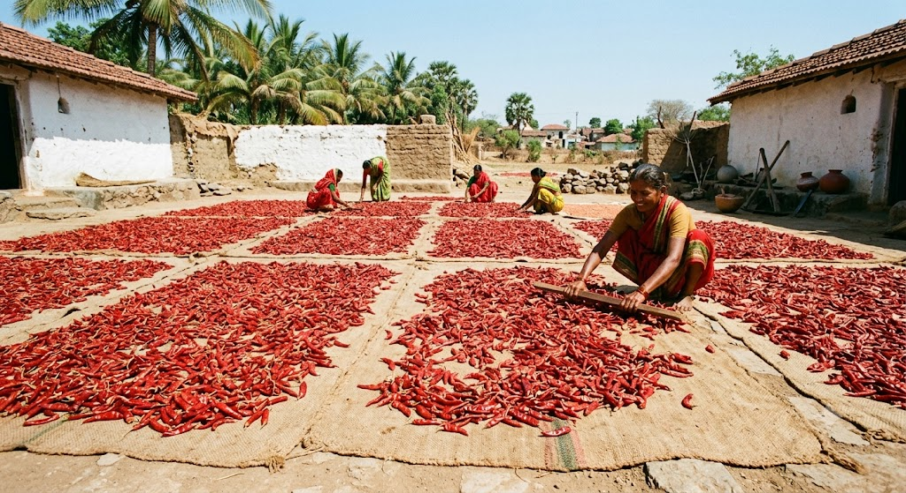
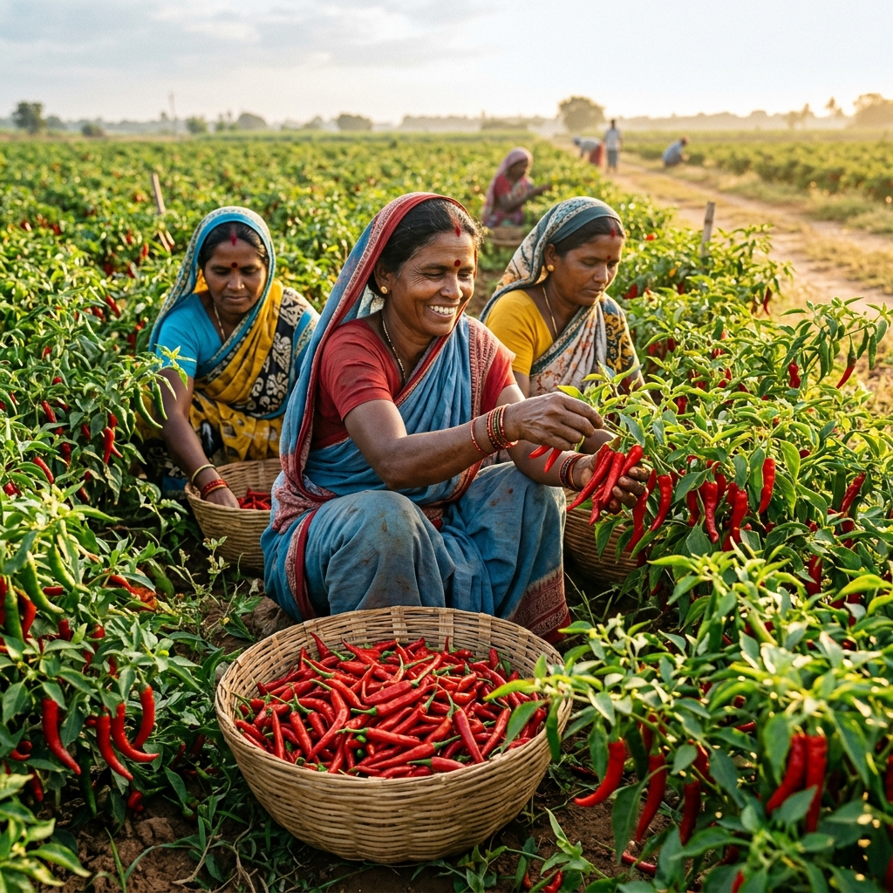
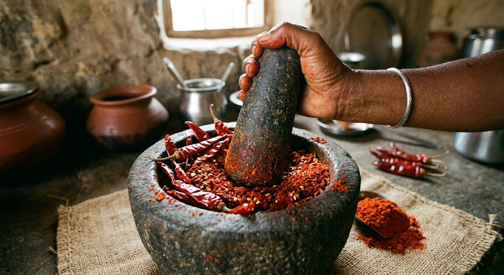
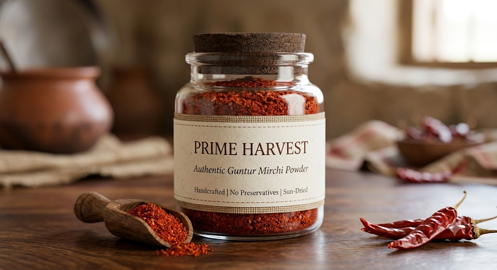

For the first aroma
Open the pack and let the roasted spices meet the warmth of a freshly cooked meal.
Pure Andhra karam blends crafted in Guntur with sun-dried chillies and traditional farm spices. 100% hand de-stemmed pods, zero Sudan dyes, and direct farm dispatch.


Guntur, Andhra PradeshHere, chillies are more than a crop. Their colour fills the drying yards; their warmth finds its way into everyday meals. The taste of karam is part of how Andhra food is remembered: bold, generous and made to be shared.
SSR began with a simple thought: the flavour we grew up with deserves the same care today. So we start with Guntur chillies, take time over their preparation, and make blends inspired by the kitchens and food traditions around us.
Read the story behind SSRIn an Andhra kitchen, karam is not just heat. It is the first aroma, the familiar taste, the reason a simple meal feels like home.
A little of Guntur, at your table.A good blend starts long before it reaches the kitchen. Each step is simple, deliberate and guided by the ingredient.
Deep-red chillies are selected for the colour, aroma and character they bring to the blend.
The chillies are sun-dried for 5 to 7 days, until they are ready for the next step.

Stems are removed by hand, then the chillies are checked before blending.

Chillies are blended with garlic and spices, roasted to bring out their aroma.

Finished batches are packed with care, ready for the journey from Guntur to your kitchen.
The right blend does more than add heat. It brings aroma, depth and a taste that brings you back for another bite.
Open the pack and let the roasted spices meet the warmth of a freshly cooked meal.
Bring a spoonful to hot rice, a crisp dosa or a simple fry. Familiar food, made more memorable.
Serve it the Andhra way: generously, alongside good food and the people you love.